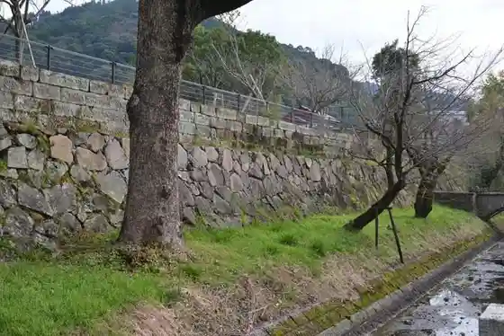
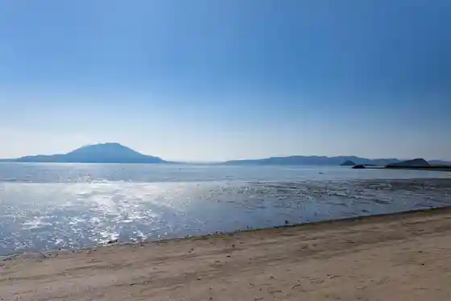
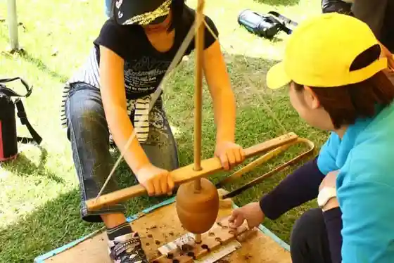
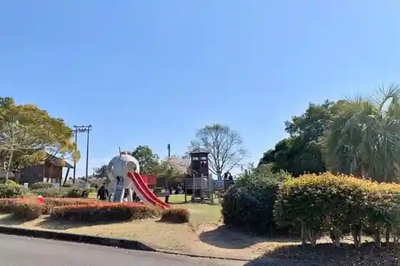

Kuroishi Gaku Forest Park
Kirishima, Kagoshima · 0995-49-3688 · Official / source link
Maizuru Castle Ruins
Kirishima, Kagoshima · 0995-45-5111 · Official / source link

Kokubun Kyanpu Beach
Kirishima, Kagoshima · 0995-45-1550 · Official / source link

Uenohara Jomon Forest
Kirishima, Kagoshima · 0995-48-5701 · Official / source link

Mizobe Uwatoko Park
Kirishima, Kagoshima · 0995-58-2451 · Official / source link

Mizobe Fureai Onsen Center
Kirishima, Kagoshima · 0995-59-3649 · Official / source link
Saigo Park (Saigo Koen Tourist Information)
Kirishima, Kagoshima · 0995-73-3828 · Official / source link
Takaya Yamagami Ryo
Kirishima, Kagoshima · 0995-45-5111 · Official / source link
Yokokawa Kenko Onsen Center
Kirishima, Kagoshima · 0995-72-9720 · Official / source link
Maruoka Park
Kirishima, Kagoshima · 0995-72-1362 · Official / source link
Iwa Do Kannon
Kirishima, Kagoshima · 0995-45-5111 · Official / source link
Yasura Shrine
Kirishima, Kagoshima · 0995-45-5111 · Official / source link
Kirishima Onsen Sato (Maruo Shuhen)
Kirishima, Kagoshima · 0995-78-2115 · Official / source link
Onami Ike
Kirishima, Kagoshima · 0995-45-5111 · Official / source link
Kirishima Highlands Kokumin Kyuyochi
Kirishima, Kagoshima · 0995-78-2004 · Official / source link
Kirishima Highlands Joba Club
Kirishima, Kagoshima · 0995-78-3455 · Official / source link
Kirishima Onsen Market
Kirishima, Kagoshima · 0995-78-4001 · Official / source link
Maruo Shizen Tansho Michi
Kirishima, Kagoshima · 0995-45-5111 · Official / source link
Maruo Taki
Kirishima, Kagoshima · 0995-45-5111 · Official / source link
Inukai Taki
Kirishima, Kagoshima · 0995-45-5111 · Official / source link
Nichi no Shutsu Onsen Ki no Ko Village
Kirishima, Kagoshima · 0995-77-2255 · Official / source link
Kirishima Kokusai Ongaku Horu (Miyama Konseru)
Kirishima, Kagoshima · 0995-78-8000 · Official / source link
Kako Shima Prefectural Kirishima Nature Fureai Center
Kirishima, Kagoshima · 0995-78-2815 · Official / source link
Waki Shrine (Waki Shrine)
Kirishima, Kagoshima · Official / source link
Kirishima Yama
Kirishima, Kagoshima · 0995-57-2505 · Official / source link
Kirishima Shrine
Kirishima, Kagoshima · 0995-57-0001 · Official / source link
Kirishima Shinwa no Sato Park (Roadside Station Kirishima)
Kirishima, Kagoshima · 0995-57-1711 · Official / source link
Onsen Center (Jinno Yu)
Kirishima, Kagoshima · 0995-57-3901 · Official / source link
Takachiho Shizen Tansho Michi
Kirishima, Kagoshima · 0995-57-2505 · Official / source link
Kirishima Mingei Village
Kirishima, Kagoshima · 0995-57-3153 · Official / source link
Takachiho Mine
Kirishima, Kagoshima · 0995-57-2505 · Official / source link
Myoken Onsen
Kirishima, Kagoshima · 0995-77-2808 · Official / source link
Nitto Yama Onsen Park
Kirishima, Kagoshima · 0995-45-5111 · Official / source link
Kako Shima Shrine (Kako Shima Shrine)
Kirishima, Kagoshima · 0995-42-0020 · Official / source link
Obama (Obama) Beach
Kirishima, Kagoshima · 0995-45-5111 · Official / source link
Hayato Tsuka
Kirishima, Kagoshima · 0995-45-5111 · Official / source link
Kumaso no Ana
Kirishima, Kagoshima · 0995-77-2111 · Official / source link
Miyaura Miya (Fukuyama no Fufu Icho)
Kirishima, Kagoshima · 0995-45-5111 · Official / source link
Kyu Tanaka Iebetsu Tei
Kirishima, Kagoshima · 0995-56-2012 · Official / source link
Matsushita Art Museum
Kirishima, Kagoshima · 0995-55-3350 · Official / source link
Kurozu Garden Tsubo Hatake SHOP&RESTAURANT (Sakamoto no Kurozu)
Kirishima, Kagoshima · 0995-54-7200 · Official / source link
Kokubun Shiroyama Park
Kirishima, Kagoshima · 0995-46-1561 · Official / source link
Sakamoto Ryoma O Ryu Shinkonryoko Toji Hi
Kirishima, Kagoshima · 0995-76-0007 · Official / source link
Hayato Tsuka Shiseki Kan
Kirishima, Kagoshima · 0995-43-7110 · Official / source link
Inariyama Park
Kirishima, Kagoshima · 0995-45-5111 · Official / source link
Kuro Su no Sato Zumi Shida (Fukuyama Kurozu)
Kirishima, Kagoshima · 0995-55-3231 · Official / source link
Yamagano Kanayama
Kirishima, Kagoshima · Official / source link
Kirishima Midori no Village
Kirishima, Kagoshima · 0995-57-0364 · Official / source link
Kako Shima Kuko Tennen Onsen Ashiyu (Oyattosa)
Kirishima, Kagoshima · Official / source link
Kirishima Shrine Eki (Kirishima) Ashi Bi no Yu Teisha Ba
Kirishima, Kagoshima · 0995-45-5111 · Official / source link
Waki Park (Fuji)
Kirishima, Kagoshima · 0995-64-0895 · Official / source link
Kirishima Momiji Tani Shizuru So
Kirishima, Kagoshima · 0995-78-2021 · Official / source link
Yoshida Onsen
Kirishima, Kagoshima · 0995-42-0545 · Official / source link
Shusui Yu
Kirishima, Kagoshima · 0995-77-2512 · Official / source link
Myoken Ishihara So
Kirishima, Kagoshima · 0995-77-2111 · Official / source link
Ten Kei So
Kirishima, Kagoshima · 0995-77-2877 · Official / source link
Kirishima Kakure Ie no Yado Yu Yu Iori Kirishima Bijin Baths You Yu
Kirishima, Kagoshima · 0995-42-0550 · Official / source link
Myoken Onsen Nemu
Kirishima, Kagoshima · 0995-77-2201 · Official / source link
Sakurasakura Onsen
Kirishima, Kagoshima · 0995-57-1227 · Official / source link
Suki no Yado Yakaku Tei
Kirishima, Kagoshima · 0995-42-6400 · Official / source link
Kirishima Yunotani Sanso
Kirishima, Kagoshima · 0995-78-2852 · Official / source link
Nitto Yama Onsen Center
Kirishima, Kagoshima · 0995-42-6854 · Official / source link
Fufu Rotemburo no Yado Ten Terasu
Kirishima, Kagoshima · 0993-22-2217 · Official / source link
Ryoko Hitoyama So
Kirishima, Kagoshima · 0995-78-2831 · Official / source link
Kirishima Shin Nen So
Kirishima, Kagoshima · 0995-78-2255 · Official / source link
Wasure no Sato Gajo En
Kirishima, Kagoshima · 0995-77-2114 · Official / source link
Sanchoku Resutoran (Kurobuta no Kan)
Kirishima, Kagoshima · 0995-57-0713 · Official / source link
Koji Village Barerubarepuraha &GEN
Kirishima, Kagoshima · 0995-58-2535 · Official / source link
Kirishima Machi Joryujo Akarui no Village
Kirishima, Kagoshima · 0995-57-0865 · Official / source link
Anraku Onsen Tsuru no Yu
Kirishima, Kagoshima · 0995-77-2483 · Official / source link
Toji no Yado Tajima Honkan
Kirishima, Kagoshima · 0995-77-2205 · Official / source link
Shio Shin Onsen Ryoma Park
Kirishima, Kagoshima · 0995-76-0007 · Official / source link
Shinrin Serapiirodo
Kirishima, Kagoshima · 0995-45-5111 · Official / source link
Osumi Yokokawaeki
Kirishima, Kagoshima · 0995-45-5111 · Official / source link
Miyamakirishima Kaika
Kirishima, Kagoshima · 0995-78-2115 · Official / source link
Kokubun Daini Kichi Tokko Shiryo Tenjishitsu
Kirishima, Kagoshima · 0995-59-3115 · Official / source link
Karei Kawa Eki
Kirishima, Kagoshima · 0995-45-5111 · Official / source link
Kankoku Gaku
Kirishima, Kagoshima · 0995-45-5111 · Official / source link
JR Kirishima Shrine Eki
Kirishima, Kagoshima · Official / source link
Oide Mizu no Yusui
Kirishima, Kagoshima · 0995-45-5111 · Official / source link
Nitto Yamanishi Sato Don Village
Kirishima, Kagoshima · 0995-56-8615 · Official / source link
Miyama Konseru Shuhen
Kirishima, Kagoshima · 0995-45-5111 · Official / source link
Takachiho Kawara
Kirishima, Kagoshima · 0995-45-5111 · Official / source link
Kendo 480 Gosen Soi (Ki Obi Tonneru)
Kirishima, Kagoshima · 0995-45-5111 · Official / source link
Shinkawa Keikoku Shuhen
Kirishima, Kagoshima · 0995-45-5111 · Official / source link
Yokokawa no Keyaki
Kirishima, Kagoshima · 0995-45-5111 · Official / source link
Tetsudo Memorial Park (Fukuyama)
Kirishima, Kagoshima · Official / source link
Naka Chaya Park
Kirishima, Kagoshima · Official / source link
So Jingaoka Tembo Tokoro
Kirishima, Kagoshima · 0995-45-5111 · Official / source link
Kirishima Kodomo Kan (Kyugoku Fun Haiteku Tembo Tokoro)
Kirishima, Kagoshima · 0995-46-8485 · Official / source link
Kirishima Yakusho (Honcho Sha)
Kirishima, Kagoshima · 0995-45-5111 · Official / source link
Jaku Mikoto Hana Promenade
Kirishima, Kagoshima · 0995-45-5111 · Official / source link
Kako Shima Airport Kanko Sogo Information Center
Kirishima, Kagoshima · Official / source link
Kako Shima Airport Takino Sabisukaunta (Kokunaisen 1 Kai)
Kirishima, Kagoshima · 0995-55-1488 · Official / source link
Kagoshima Airport 36 Kantorii Club
Kirishima, Kagoshima · 0995-72-1081 · Official / source link
Kirishima Gorufu Club
Kirishima, Kagoshima · 0995-78-2324 · Official / source link
Rabisuta Kirishima Hiruzu
Kirishima, Kagoshima · 0995-64-4328 · Official / source link
Kirishima Sakura Furutsu Land Kirishima Sakura Kan
Kirishima, Kagoshima · 0995-73-3900 · Official / source link
Jusan Tsukahara Shiseki Koenmae (Himawari Kosumosu Hatake)
Kirishima, Kagoshima · 0995-45-5111 · Official / source link
Satsuma Suzuki Kogei Kan
Kirishima, Kagoshima · 0995-45-0177 · Official / source link
Kirishima Tourist Information Ashi Yu Kirishima
Kirishima, Kagoshima · 0995-57-1588 · Official / source link
Anraku Onsen Myoban Yu
Kirishima, Kagoshima · 0995-77-2625 · Official / source link
Kazoku Onsen Emaki Yugoya Monogatari
Kirishima, Kagoshima · 0995-42-3406 · Official / source link
Saigo Don Yu
Kirishima, Kagoshima · 0995-43-3870 · Official / source link
Dai Akedera Keikoku Park
Kirishima, Kagoshima · 0995-55-1358 · Official / source link
Kirishima Jinzui Kyo
Kirishima, Kagoshima · 0995-45-5111 · Official / source link
Kimamana Daidokoro
Kirishima, Kagoshima · 0995-78-8118 · Official / source link
Yokokawa kito
Kirishima, Kagoshima · 0995-73-3574 · Official / source link
CAFE510
Kirishima, Kagoshima · 0995-73-7445 · Official / source link
Takachiho Kawara Bijita Center
Kirishima, Kagoshima · 0995-57-3224 · Official / source link
Kirishima Fumoto no Eki
Kirishima, Kagoshima · 0995-76-2888 · Official / source link
Bihada Baths Koshika no Onsen
Kirishima, Kagoshima · 0995-43-4046 · Official / source link
Ko Minka Tomoko no Shi
Kirishima, Kagoshima · 0995-45-2668 · Official / source link
Toki KIRISHIMA
Kirishima, Kagoshima · 0995-55-8039 · Official / source link
Gyararii Tenchi Nin
Kirishima, Kagoshima · 099-813-7481 · Official / source link
Iyashi Baths Yama Sui
Kirishima, Kagoshima · 0995-45-2226 · Official / source link
Ko Minka Village Kazoku Yu Tenku
Kirishima, Kagoshima · 0995-47-7171 · Official / source link
Ryo Kita Fureai Farm no Aka Soba
Kirishima, Kagoshima · 0995-59-3747 · Official / source link
obama village / Obama Virejji
Kirishima, Kagoshima · 0995-73-7739 · Official / source link
mijicafe
Kirishima, Kagoshima · 0995-73-6885 · Official / source link
Bekarii & Kafe ReeNo
Kirishima, Kagoshima · 0995-57-8888 · Official / source link
Za Parusu Kirishima
Kirishima, Kagoshima · 0995-56-0111 · Official / source link